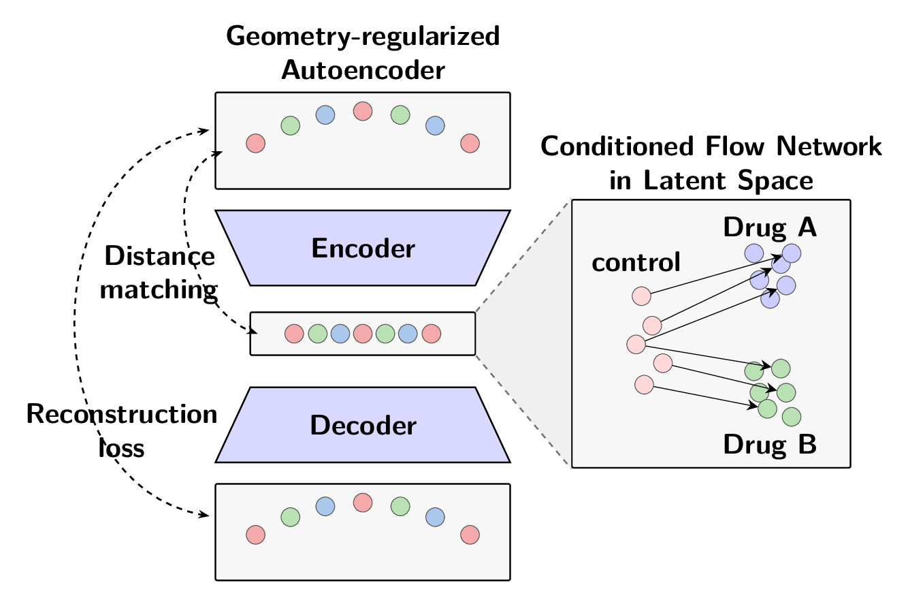

Geometry-Regularized Latent Flow Models for Single-Cell Perturbation Prediction
Predicting heterogeneous responses to drug perturbations is valuable in drug discovery by reducing wet lab burden and enabling faster development of new therapeutics through in-silico experimentation. One key challenge is generalizing known perturbation effects to unseen cell populations, like new patients, complex tissues, or new types of cancer, where only a subset of drugs have been tested. In GLFM, we explore how generative flow models (flow matching and neural ODEs) can be used in the latent space of a geometrically-regularized autoencoder to perform single-cell drug perturbation modeling. We condition these models on sample and drug covariates like cell type and drug dose to enable flexible and generalizable modeling via a learned condition encoder. We primarily evaluate on the SciPlex3 dataset, containing 3 human cancer cell lines and around 200 drug treatments in each cell type. We found that the choice of autoencoder reconstruction loss and latent space largely dominates the effect of geometric regularization, although geometric regularization in the vanilla autoencoder latent space yields consistent improvements and stabilizes autoencoder training. We also derive upper bounds on Cosine LogFC, $\bar{W_1}$ and $W_2^2$ metrics as functions of cumulative variance explained under PCA, showing that MSE reconstruction accuracy is an upper bound on $W_2^2$ for autoencoder models. Counterintuitively, we find that flow matching models in lower dimensional PCA space ($d=16$) outperform similar models in higher dimensional PCA space ($d=256$) despite the higher latent-space reconstruction ceiling on performance in the higher dimensional space. Finally, we recommend metric-informed autoencoder design, such as using MSE loss when $W_2^2$ is a metric (because it directly upper-bounds $W_2^2$) and suggest computation of encode-then-decode reconstruction ceiling for perturbation prediction and single-cell trajectory-inference modeling before investing in flow model tuning, to avoid optimization in spaces with capped ceilings on metrics.
